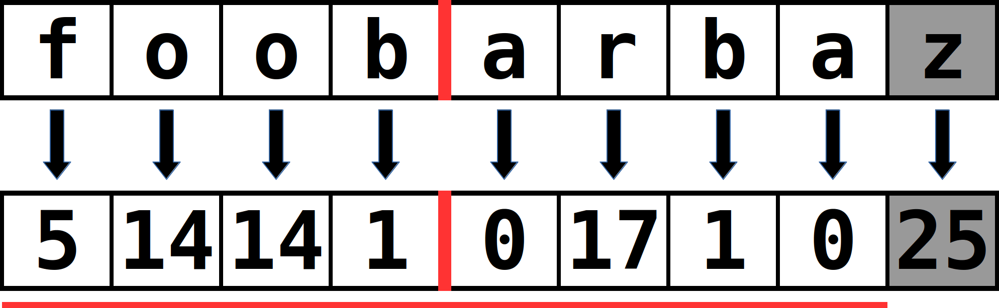
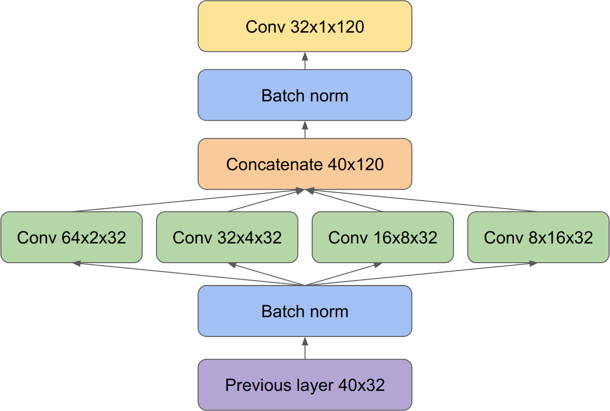
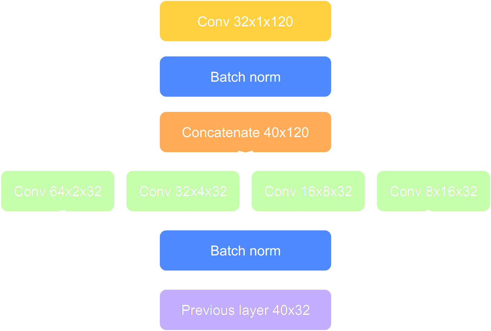
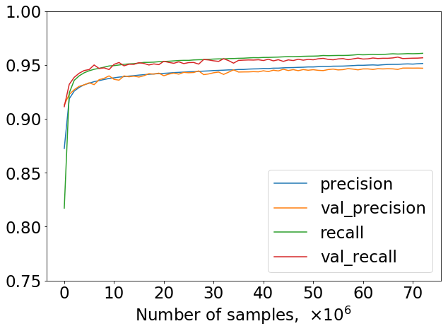
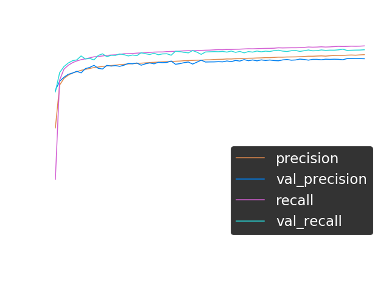

Splitting source code identifiers using BiLSTM
Vadim Markovtsev, Waren Long, Egor Bulychev
Romain Keramitas, Konstantin Slavnov, Gabor Markowski
source{d}
Naming conventions
UpperCamelCase
lowerCamelCase
lower_underscore
UPPER_UNDERSCORE
Problem
FooBarBaz = [foo, bar, baz]
foobarbaz = ?
Applications
- Core vocabulary size reduction
- e.g. in topic modeling, identifier embeddings
- Automatic naming fix
- e.g.
FoobarBaz → FooBarBaz
- Typing without "Shift"
Processing
- Extract distinct identifiers from big code
- Split them by naming convention heuristics
- Use the resulting sequencies as labels
Public Git Archive (PGA)
- 182,014 GitHub top-starred repos
- 3 TB on disk
- 54,5 million files in HEAD
- 15,9 billion lines of code in HEAD
- 455 programming languages
pga.sourced.tech
Identifiers extraction
Result: 49.2 million distinct identifiers.
Labels
- Use the naming conventions
- 7.5% of the identifiers cannot be split
- Other 20% are split to the same sequence
Result: 35.6 million distinct labeled samples.
Example
FooBarBaz -> [foo, bar, baz]
X: foobarbaz
Y: [foo, bar, baz]
Length threshold
- We exclude too long samples
- Actual threshold: 40 chars when merged
Result: 34.4 million distinct labeled samples.
Heuristics
UpperCamelCase -> [upper, camel, case]camelCase -> [camel, case]FRAPScase -> [fraps, case]SQLThing -> [sqlt, hing]_Astra -> [astra]CAPS_CONST -> [caps, const]_something_SILLY_ -> [something, silly]blink182 -> [blink]FooBar100500Bingo -> [foo, bar, bingo]Man45var -> [man, var]method_name -> [method, name]Method_Name -> [method, name]101dalms -> [dalms]101_dalms -> [dalms]101_DalmsBug -> [dalms, bug]101_Dalms45Bug7 -> [dalms, bug]wdSize -> [wd, size, wdsize]Glint -> [glint]foo_BAR -> [foo, bar]
Released
- 49.2 raw identifiers after extraction and filtering
- Raw identifiers per language, filtered
- Java, C#, C, C++, Go, Python, Ruby, Objective-C, Javascript, PHP, Shell
bit.ly/2zO8rJP
Unsmoothed character-level model
- Use the maximum likelihood to estimate the probabilities $$P(\underline{\mbox{ }}|foo) = \frac{count(foo\underline{\mbox{ }})}{count(foo*)}$$
- The char-level LM makes the Markov assumption
- 2 models are trained independently in both directions, (AND, OR) combined
- Depth is set to 11
- Implementation based on CharStatModel
Dynamic programming
- Training :
- Wikipedia corpus
- Our dataset
- Assuming Zipf's law prior or posterior
- Implementation based on wordninja
Gradient boosting on decision trees


Gradient boosting on decision trees
- XGBoost
- Window length is 10
- Tree depth is 30
- Number of trees is 50
- 80% negative samples
Character-level Convolutional Neural Network
- One-hot encoding
- 3 stacked 1D Inception layers (ReLU)
- Time-distributed fully-connected layer with binary outputs (sigmoid)
Character-level Convolutional Neural Network


Architecture
- CharRNN
- Prediction based on the two reading directions
- Two layers
- 256 neurons each
Training performance
- 10 epochs: ~3 hours
- 2 NVIDIA GTX 1080 cards


How we evaluated
- 80% train, 20% validation
- Precision, Recall and F1
Comparison
| Model |
Precision |
Recall |
F1 |
| Char. ML LM → ∨ ← |
0.563 |
0.936 |
0.703 |
| Char. ML LM → ∧ ← |
0.966 |
0.573 |
0.719 |
| Stat. dyn. prog., Wiki |
0.741 |
0.912 |
0.818 |
| Stat. dyn. prog., Zipf |
0.937 |
0.783 |
0.853 |
| Stat. dyn. prog., posterior |
0.931 |
0.892 |
0.911 |
| GBDT |
0.931 |
0.924 |
0.928 |
| Char. CNN |
0.922 |
0.938 |
0.930 |
| Char. BiGRU |
0.945 |
0.955 |
0.949 |
| Char. BiLSTM |
0.947 |
0.958 |
0.952 |
Core vocabulary size
- Before: 2.9 million
- After: 1.1 million
We are able to train embeddings on the whole vocabulary: bit.ly/2NqAlxy
What we did
- Extracted 49.2 million distinct identifiers from PGA
- Used heuristics to generate the labeled dataset of 34.4 million samples
- Trained several ML models to split identifiers
- Found that the character-level bidirectional LSTM performed the best
- Reduced the core vocabulary size by 2 times
Future work
- Bootstrap the training
- Apply the first generation model after splitting with heuristics
- Train the second generation model on the new dataset
- ...repeat?
- Do not completely discard non-alpha characters